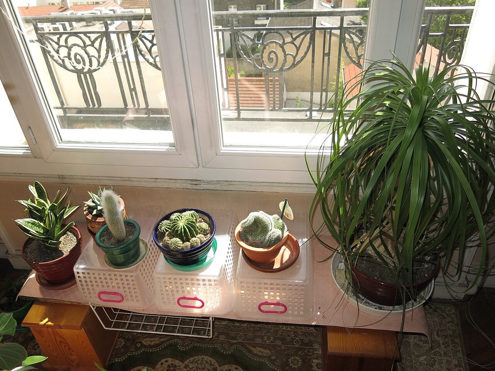

旁(つくり)
店のこと
お店について確認できているのは、所在地・電話番号・Instagramのアカウントだけです。
「想像してみる」部分は制作側が想像して書いたものです。お店の実際の様子・考え・メニューとは関係がありません。
確認できていること
- 店名は「珈琲メルシー」、業種はカフェ
- 所在地は茨城県鹿嶋市宮中５丁目１３−１３(〒314-0031)
- 電話番号は0299-83-8025
- Instagramのアカウントがある
- 営業時間・定休日・メニュー・価格・ご予約・駐車場は準備中

想像してみる
「メルシー」という響きから
由来は分かりません。制作側は、感謝を伝える言葉のような響きから、ひと言の「ありがとう」が似合うお店かもしれない、と想像しました(実際のお店の姿ではありません)。


